The problem
Planning a trip usually means juggling several tools at once: notes, maps, screenshots, booking emails and recommendation apps. That fragmentation raises cognitive load and makes it hard to get a clear picture of the trip.
Many existing apps focus either on inspiration or on rigid planning, forcing people into predefined structures that reflect neither their preferences nor how plans change over time.
The challenge: a solution for building personalised itineraries, with all the relevant information at hand, flexible and easy to update, both before and during the trip.
My role and the constraints
I worked as co-founder and sole UX/UI designer, owning the whole process: product definition, flows, information architecture, visual system and prototypes. I collaborated with the CTO and co-founder, which meant frequent iterations and decisions balancing user needs, business goals and technical feasibility, with limited time and a constantly shifting roadmap.
Research: competitors and beta users
Direct competitor benchmark
I analysed four direct competitors (Mindtrip, Layla, Wonderplan and Wanderlog). The market is made of specialised solutions: each one solves one phase of the trip, but none covers in-trip support with AI at its core. That gap is what defines Maiteego.
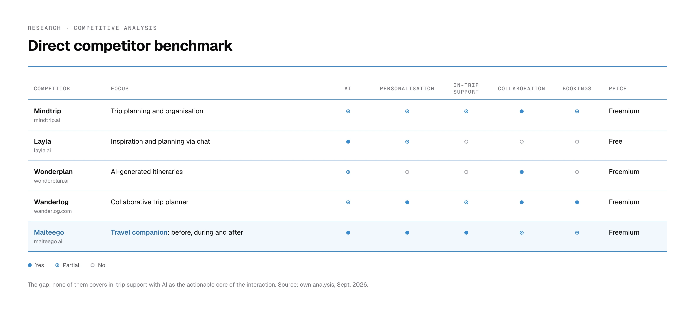
That led to the product principles: prioritise clarity over the core function, allow flexibility when building itineraries, and support the traveller before and during the trip.
Observation in the beta (April 2026): why new users weren't creating their first trip
With the app in beta, I observed new users on the first step of creating a trip, where you add stops, stays and transport. There was no quantitative data for that flow, so the research was qualitative, and what I saw was clear: people didn't know where to start.
They couldn't find how to add the first destination: the only entry point was a «+» with four collapsed options on an empty screen.
I decidedAn empty state with a single action that says what it does: «Add your first destination».
They didn't understand how a trip is organised: stops that contain their stays and transport.
I decidedKeep that hierarchy, but make it visible: each stop shows its stays and transport inside it, with its own add button.
They struggled to edit and delete, because it depended on a barely visible edit mode.
I decidedRemove the mode: edit and delete always visible on each card, and each stop's days adjustable inline.
I turned those observations into five questions and checked them against six references (Wanderlog, TripIt, Roadtrippers, TripAdvisor, Sygic Travel and Google My Maps). The conclusion: apps that work either remove the blank screen or make the first action so obvious it needs no instructions. From there I explored three directions (a step-by-step wizard, a single screen with inline actions and a hybrid) and recommended the hybrid: a guided question, «Where do you want to go?», that places the first stop and then gives users freedom to continue. It's the biggest change for new users with the smallest change to the flow's structure.
Information architecture and first version
Before drawing any screens I defined the main sections in Miro (itinerary creation, destination information, explore) and simple, flexible flows for creating, editing and adapting itineraries without rigid structures.
Key screens of the first version (2025)
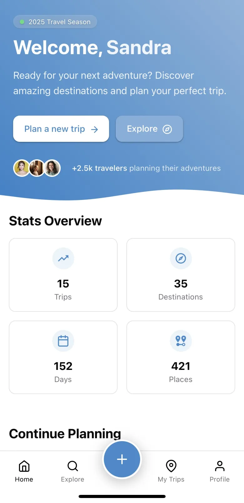
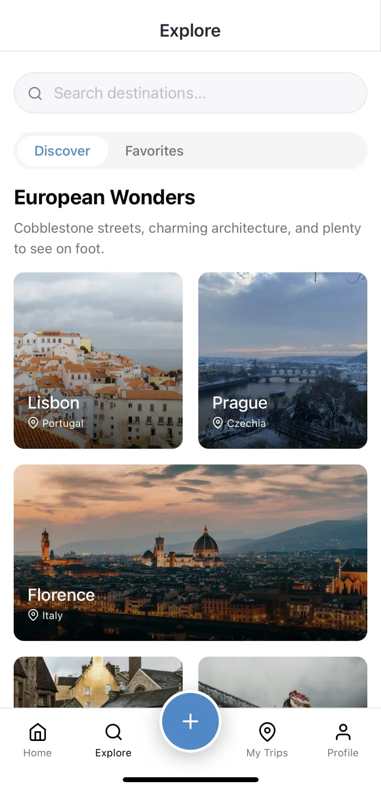
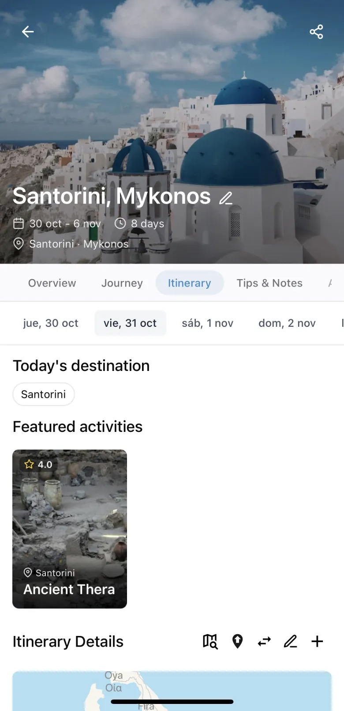
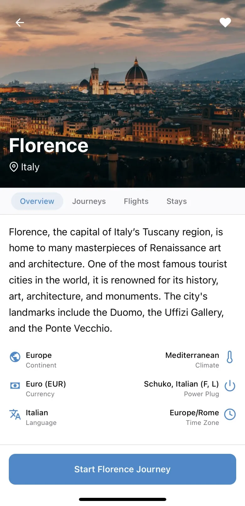
Designed to balance information density and visual clarity in a mobile context: hierarchy, legibility, spacing and clear CTAs to reduce cognitive load while planning and while travelling.
The design system today
With the app in production, the system settled like this: neutrals on the Zinc scale, a single brand blue, three semantic colours (warning, avoid, success), eight text styles in Geist, a 4 pt grid, and hierarchy through borders and surfaces instead of shadows. Fifteen components cover 90% of the screens.
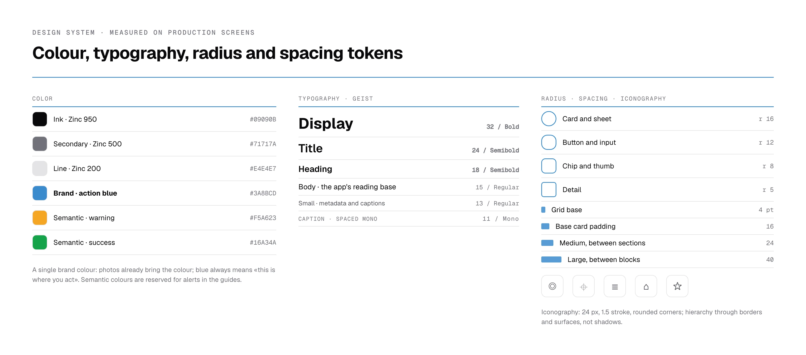
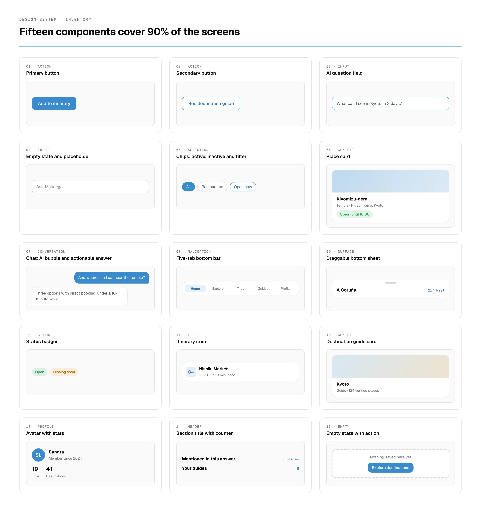
Iteration: creating an itinerary, from 4 screens to 2
Iteration was constant: several solutions were redesigned as goals evolved and feedback revealed gaps between the initial ideas and real needs. Working so closely with my co-founder pushed me to take feedback, step back from my first decisions and iterate towards clearer solutions.
The clearest example: the «create itinerary» flow went from four screens to two. I reduced the number of screens and the elements on each one so users wouldn't feel overwhelmed, without dropping any preference or data needed to personalise the trip.
Product evolution in beta (2025 → 2026): from planner to travel companion
With real users, the design evolved in three directions: putting AI at the centre of the interaction (a chat where everything mentioned is actionable), turning the destination into a guide that answers questions instead of a static card, and bringing live information (local time, weather, alerts) into the explore screens. The screens are real production captures.
1 · Home: from a stats dashboard to a question
Before: greeting, stats and «continue planning». After: the question to the AI is the hero.

2 · Chat: every place the AI mentions is a card you can add to the plan
Inline chips inside the answer and, at the end, the «Mentioned in this answer» cards with a «+» to add them to the itinerary.
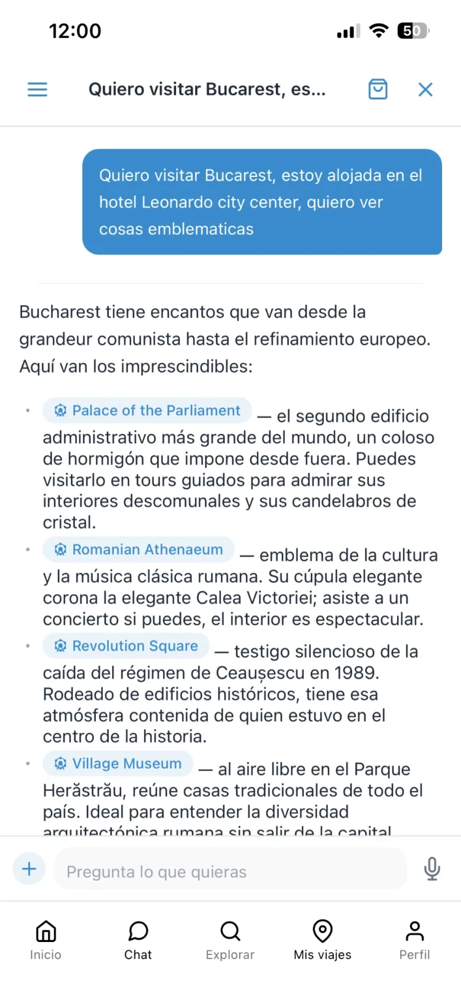
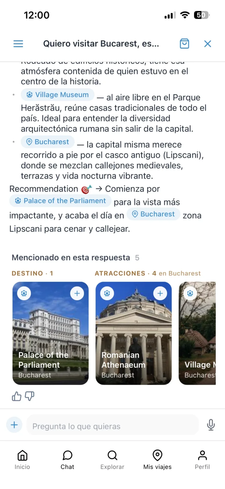
3 · Explore: from a city gallery to a live map
Before: photo collections of cities. After: a map with places by type and a bottom sheet with local time, weather and lists.
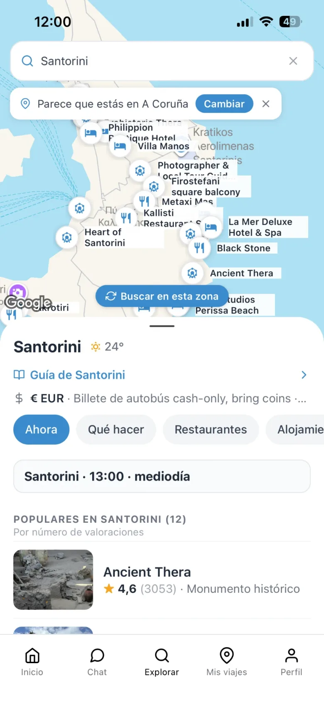
4 · Destination guide: from a fact sheet to an editorial guide
Before: photo, a generic paragraph and six facts. After: a hero with character tags, tabs by intent and «Why Kyoto».
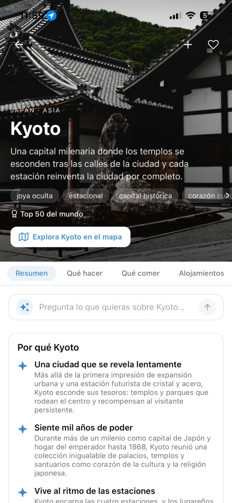
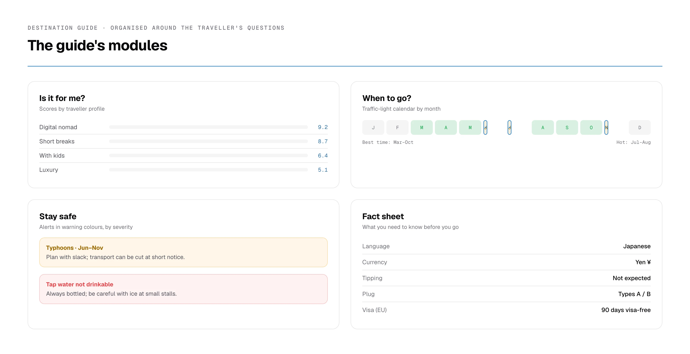
5 · Itinerary: from a list of activities to a plan that reacts
Before: today's destination and featured activities. After: flexible dates, the day's weather, accommodation, a numbered route and travel times between stops.
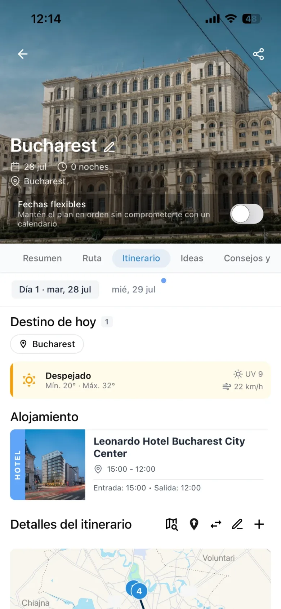
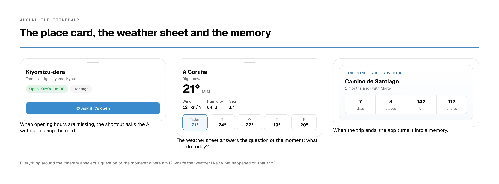
6 · My trips and profile: the traveller's memory and transparency about AI
Trip history, saved itineraries with a day bar per destination, and AI usage visible in the profile.
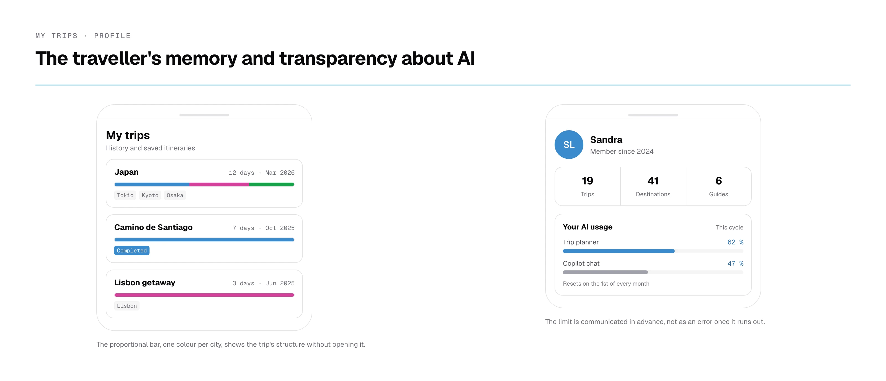
«Sandra is a designer who works well, gets involved in projects and doesn't reduce her work to just making screens and that's it. She takes the trouble to understand the problem, think about the user with empathy and find solutions by iterating on the product. Her curiosity about AI has led her to use it to find ways to help her in her work: exploring new ideas, different approaches, speeding up tasks… But always putting her judgement as a designer first. She's a profile that keeps evolving over time and is always looking for how to do things a little better.»
Results and learnings
Maiteego resulted in a solid design foundation: a clear structure, a consistent visual system and a user-centred approach aligned with the travel companion concept. The evolution in beta (chat, guides, live map) proved that foundation could scale: the system and architecture of the first version supported far more complex features without redoing the navigation.
Beyond the screens, this project consolidated my understanding of the full UX/Product flow, from discovery to iteration, and my ability to design with intent, justify decisions and work within real constraints. I keep iterating based on real usage.
What I'd do differently
The first step of creating a trip reached the beta with a «+» that new users couldn't find. A five-person test on the prototype would have caught it earlier and at a lower cost.
We didn't instrument the key flows, so the beta research could only be qualitative. Today I'd define two or three metrics before launch, such as the percentage of new users who create their first trip.